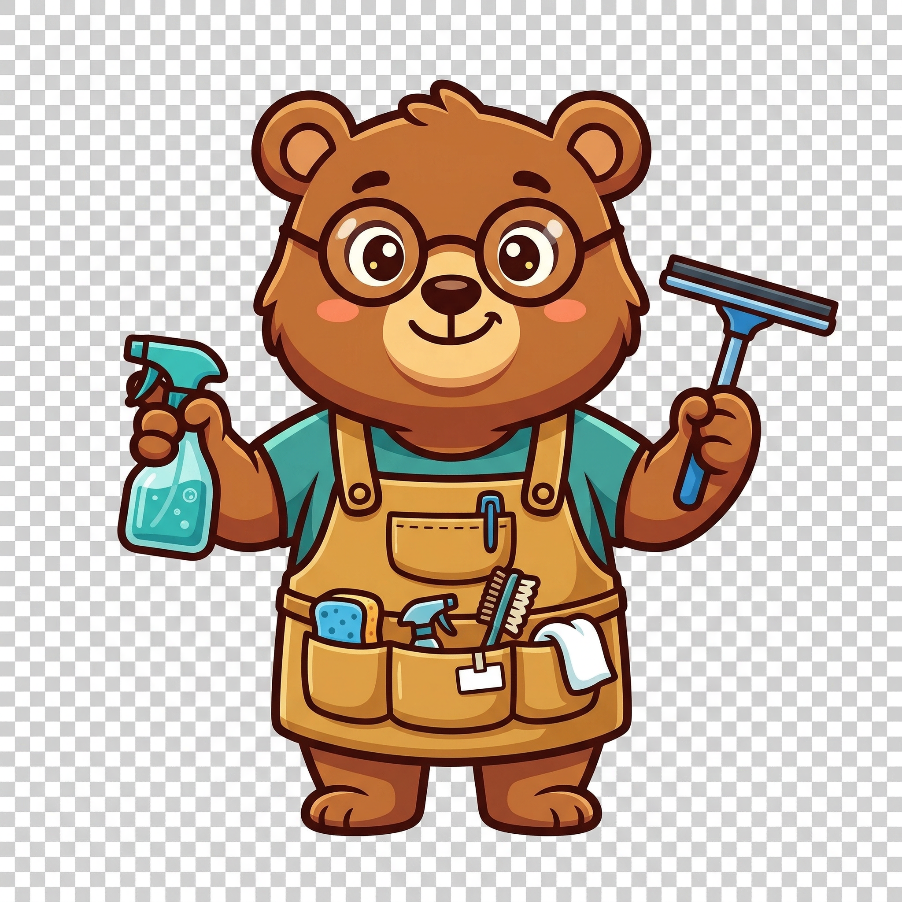

Keen Bear is a free, open text cleaning and formatting utility that runs entirely in your browser. Paste in messy text — copied from email, a PDF, a website, a code editor, or an AI assistant — pick a cleaner from the sidebar, and get clean output instantly. No sign-up, no server, no data leaves your machine.
It's built for writers, developers, editors, and anyone who regularly wrangles plain text. Whether you need to strip indentation from a code paste, unwrap hard-wrapped paragraphs, normalize unicode characters, or redact email addresses before sharing a document, Keen Bear handles it in one click. Your text stays private — all operations run locally in JavaScript with zero network requests.
Keen Bear is a Progressive Web App. After your first visit, it works fully offline and can be installed as a standalone app on your desktop or phone. It's part of a collection of small, useful web tools built by Adam Tervort.
Keen Bear includes 25 one-click cleaners organized by category. Click any cleaner in the sidebar to apply it to your entire text. Each application is one undo step.
Collapses runs of multiple spaces to a single space and trims trailing spaces from each line.
Before: Hello world
After: Hello worldCollapses runs of three or more blank lines down to a single paragraph break. Preserves intentional double-newline paragraph separators.
Before: Line one↵↵↵↵↵Line two
After: Line one↵↵Line twoDetects the smallest common indent across all non-empty lines and removes it. Useful for pasted code snippets that carry extra indentation.
Before: function hello() {
return 'hi';
}
After: function hello() {
return 'hi';
}Replaces every tab character with spaces (2 by default).
Before: →hello→world
After: hello worldRemoves leading and trailing whitespace from every line.
Before: hello world
After: hello worldReflows text to fit within 80 characters per line (configurable). Preserves paragraph breaks.
Before: This is a very long line that goes on and on and exceeds eighty characters in total width.
After: This is a very long line that goes on and on and exceeds eighty characters
in total width.Strips the leading > and > from each line — the quoting characters added by email forwarding.
Before: > > Original message text
After: > Original message textJoins lines within a paragraph into flowing text (replaces single newlines with spaces) while preserving double-newline paragraph breaks. Perfect for cleaning text copied from AI assistants, terminals, or hard-wrapped editors.
Before: This is a line that
was hard wrapped
by an editor.
After: This is a line that was hard wrapped by an editor.One-click combo: strips leading indentation, unwraps hard-wrapped paragraphs, and collapses extra spaces. Designed for cleaning text copied from code editors and AI coding assistants.
Before: This is indented text
that was also hard
wrapped by a tool.
After: This is indented text that was also hard wrapped by a tool.Removes all empty and whitespace-only lines. More aggressive than Remove Extra Returns — eliminates all gaps, not just excess ones.
Before: Line one
Line two
Line three
After: Line one
Line two
Line threeConverts all text to uppercase letters.
Before: Hello World
After: HELLO WORLDConverts all text to lowercase letters.
Before: Hello World
After: hello worldCapitalizes the first letter of each word, with smart handling of articles and prepositions (a, an, the, and, but, or, etc.) which stay lowercase mid-sentence.
Before: the quick brown fox and the lazy dog
After: The Quick Brown Fox and the Lazy DogCapitalizes the first letter after sentence-ending punctuation. Everything else becomes lowercase.
Before: hello world. goodbye WORLD.
After: Hello world. Goodbye world.Strips all HTML tags and decodes HTML entities, leaving only the text content.
Before: <p>Hello <strong>world</strong></p>
After: Hello worldConverts smart/curly quotes (“ ” ‘ ’) to plain straight quotes (" ').
Before: “Hello” and ‘world’
After: "Hello" and 'world'Converts straight quotes to typographically correct smart/curly quotes.
Before: "Hello" and 'world'
After: “Hello” and ‘world’Removes all emoji characters, including multi-codepoint sequences like family emojis.
Before: Great job 🎉 Keep going 💪
After: Great job Keep going Strips all characters outside the standard ASCII range (codes 0-127). Removes accented letters, emoji, currency symbols, and other unicode characters.
Before: café €50 naïve
After: caf 50 naveConverts common unicode characters to their ASCII equivalents: smart quotes to straight, em/en dashes to hyphens, ellipsis to three dots, non-breaking spaces to regular spaces.
Before: “Hello” — wait…
After: "Hello" -- wait...Removes email addresses from the text. Useful for redacting contact information before sharing.
Before: Contact me at user@example.com thanks
After: Contact me at thanksRemoves web URLs (http, https, and www) from the text.
Before: Visit https://example.com for details
After: Visit for detailsSorts all lines alphabetically. Supports ascending and descending order.
Before: banana
apple
cherry
After: apple
banana
cherryRemoves duplicate lines, preserving the first occurrence of each.
Before: apple
banana
apple
cherry
After: apple
banana
cherryEnsures a single space follows periods, commas, exclamation marks, question marks, semicolons, and colons. Does not affect numbers (e.g. 3.14 and 1,000 are left alone).
Before: Hello.World,this is great!Right?
After: Hello. World, this is great! Right?Yes, completely free with no catch. There are no ads, no premium tiers, no usage limits, and no account required. Keen Bear is a public utility — part of a collection of small, useful web tools built by Adam Tervort. You can use it as much as you want, whenever you want, at no cost.
Your text never leaves your browser. Keen Bear has zero server-side code — no API calls, no analytics that capture your content, no data transmission of any kind. All cleaning operations run locally in JavaScript on your device. Your text stays on your machine from the moment you paste it to the moment you close the tab. This makes Keen Bear safe for sensitive or confidential content.
Yes. Keen Bear is a Progressive Web App (PWA) with a service worker that caches all assets on first visit. After that initial load, it works fully offline — no internet connection needed. You can also install it as a standalone app on your desktop or phone through your browser's "Install" or "Add to Home Screen" option, giving you a dedicated window without browser chrome.
Yes. Open Find & Replace with Cmd+F (or Ctrl+F on Windows/Linux), then check the "Regex" toggle. Keen Bear supports full JavaScript regular expression syntax including capture groups — you can use patterns like $1 in the replacement field to reference matched groups. Match count updates in real time as you type, and regex patterns are capped at 500 characters to prevent performance issues.
Keen Bear supports standard editing shortcuts: Cmd+Z for undo, Cmd+Shift+Z for redo, Cmd+A to select all, and Cmd+C to copy. For Keen Bear-specific features: Cmd+F opens Find & Replace, Cmd+K or / focuses the cleaner filter, and Escape closes panels and clears filters. The undo history tracks up to 20 levels, so you can freely experiment with cleaners and step back.
Keen Bear was built by Adam Tervort, a developer who makes small, useful web tools. It's part of a collection that includes TL;DResume, Breathe Easy, and ComicCaster. Keen Bear was inspired by TextSoap and similar desktop text utilities, reimagined as a modern, free, browser-based tool with a dark-mode-first design and zero dependencies.